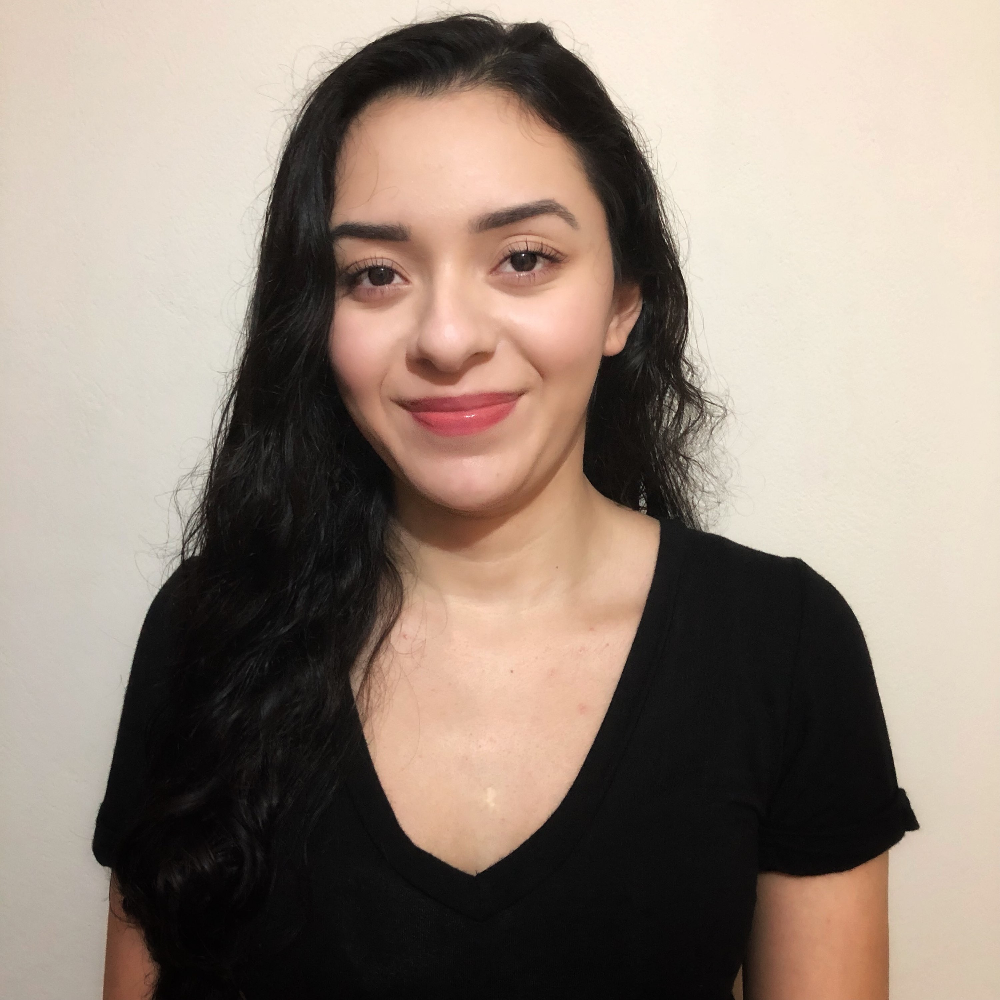

The Knowledge House Pre Work

Hi! My name is Jasmin Hernandez, and my passion is front end web
development. That is why when I saw The Knowledge House was going to be
doing a 2021 fellowingship innovation program on web development & design,
I had to apply! I love bringing wireframes to life, and I love working
with CSS especially. I believe that The Knowledge House will give me much
more confidence on the other skills in web development that I think I need
improvement, especially Javascript. Having a great instructor/s will help
me into a path of understanding the language better as well as giving me
more confidence with answering questions on web develipment. Getting into
this program is also important to me because I know it'll help me with
networking, which has been much more difficult during this pandemic, and
getting into a more natural habit and schedule of things will also be
great.
 GitHub
GitHub
 LinkedIn
LinkedIn
 Portfolio
Portfolio